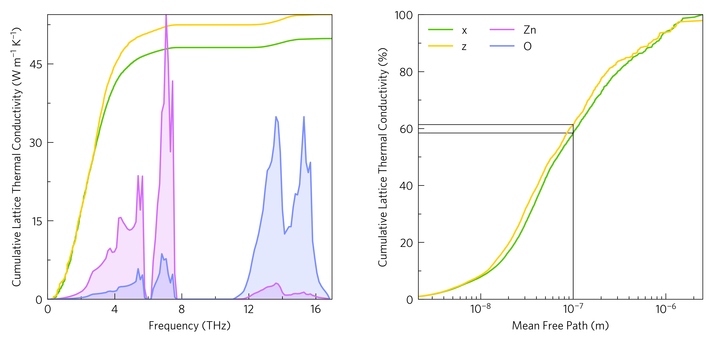

Cumulative Lattice Thermal Conductivity¶
This shows two plots of cumulative lattice thermal conductivity. The first one is against frequency, and particularly in conjunction with a density of states (DoS) or a phonon band structure, this can show the relative contributions of the constituent atoms to the lattice thermal conductivity. The second is against mean free path, and can be used to approximate the effect of nanostructuring, for which reason the ability to add markers has been included, e.g. here you can see nanostructuring to 100 nanometers may reduce the lattice thermal conductivity by around 40 %.
The right plot can be plotted at the command line with:
tp plot cumkappa ../data/zno/kappa-m404021.hdf5 --mfp --percent -d x -d y -c '#59c605' -c '#ffcf06' --nofill --xmarkers 1e-7 -l x -l y --location in
And while the layering of the DoS plot is not yet supported at the
command line, the cumkappa part of the left graph can be plotted by
removing --mfp --percent --xmarkers 1e-7 from the above.
The python version is as follows:
1 2 3 4 5 6 7 8 9 10 11 12 13 14 15 16 17 18 19 20 21 22 23 24 25 26 27 28 29 30 31 32 33 34 35 36 37 38 39 40 41 | #!/usr/bin/env python3
import tp
kappafile = '../data/zno/kappa-m404021.hdf5'
temperature = 300
direction = ['x', 'z']
quantities = 'frequency mode_kappa mfp'
# Note for cumkappa and waterfall plots, mode_kappa and not kappa is required
# You can ignore this section
from os import path
if not path.isfile(kappafile) or (path.getsize(kappafile) < 1024*1024*100):
raise Exception('File not found, please use get-data.sh')
# End ignore
dosfile = '../data/zno/projected_dos.dat'
poscar = '../data/zno/POSCAR'
colour = ['#59c605', '#ffcf06']
colours = {'Zn': '#d46ef9',
'O': '#7b8eff'}
# Axes
fig, ax, add_legend = tp.axes.small.two_h()
# Load
data = tp.data.load.phono3py(kappafile, quantities=quantities)
dos = tp.data.load.phonopy_dos(dosfile, poscar=poscar)
# Add
tp.plot.frequency.add_cum_kappa(ax[0], data, temperature=temperature,
direction=direction, colour=colour)
tp.plot.mfp.add_cum_kappa(ax[1], data, temperature=temperature, scale=True,
direction=direction, colour=colour, xmarkers=1e-7)
tp.plot.frequency.add_dos(ax[0], dos, colour=colours, scale=True, main=False)
add_legend(location=2, ncol=2)
# Save
fig.savefig('cumkappa.pdf')
fig.savefig('cumkappa.png')
|
In order to combine frequency plots, there are two important tags, main,
which controls the setting of axis limits and labels, and shouls be False
for all but the main plot; and scale, which scales the data to the axes,
allowing diverse plots to share :rainbow: (line 35). An alternative usage of
these is if both are True, it scales to percent (line 33). This is done
with the --percent tag at the command line.
The markers are added with the xmarkers tag (line 34), and have a
counterpart, ymarkers.
This also demonstrates use of the add_legend function supplied with
tp.axes functions (line 37), which combines the legends of all plots and
places itself in one of several pre-programmed position, which you can
select with the location argument. Numbers will place the legend
in one of the axes with loc='best', and there are also several
descriptive positions, such as above and right. It also accepts
most ax.legend arguements such as title and ncol. If you
want to use custom handles and labels in a multi-axes figure (including
DoS axes), you must specify custom=True.